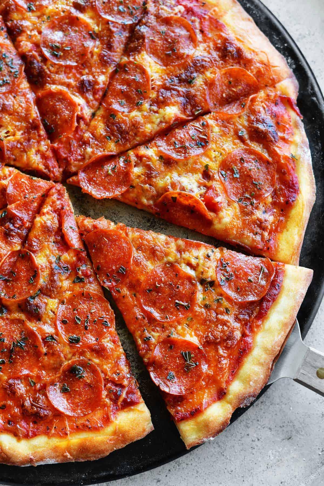

Pizza Recipe

This Pizza can be made easily with 2 ingredients for the dough
Easily made pizza at home with dough being made in just a few minutes and whatever toppings you like!
Ingredients:
- Self Rising Flour (1 1/2 cup)
- Oikos Greek Yogurt (1 cup)
- Few pinches of flour
- Pizza sauce
- Shredded Mozzarella Cheese (1/2 cup)
- Toppings of your choice
Directions
- In a bowl mixed the self rising flour and greek yogurt and knead it for a few minutes,
sprinkle a little flour to make the process easier
- Spread it out in a baking dish and use a roller to make it cover most of the dish
- Spread pizza sauce on top, and add a small layer of shredded mozzarella cheese
- Add in your toppings of choice, it can be pepperoni or pineapple, lastly add in the rest of the shredded mozzarella cheese on top
- Preheat oven to 450 degrees and cook it for 25-30 minutes or until it looks ready, take it out and serve after cooling!
Back to top
Click here to go back for more recipes!